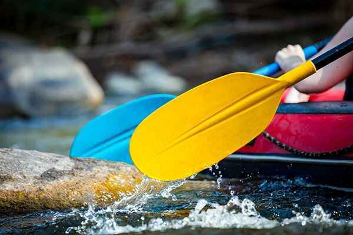
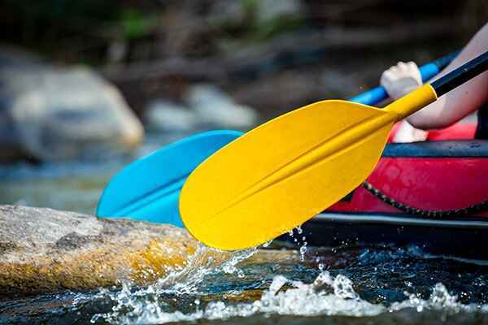
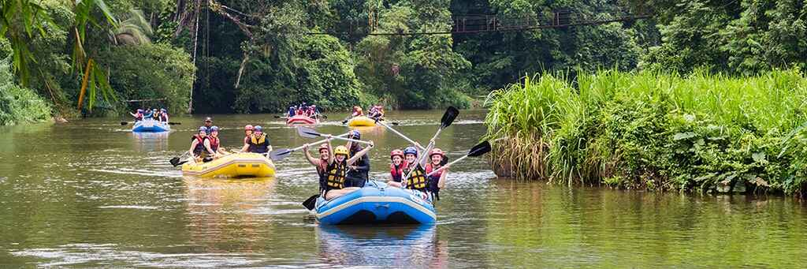
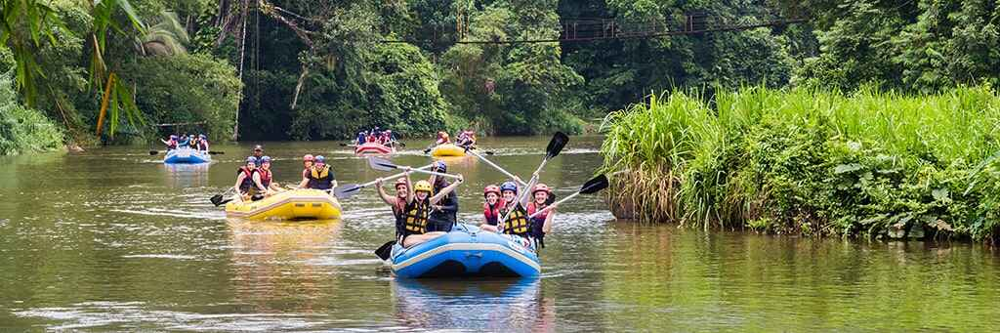
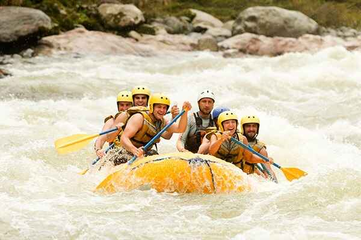
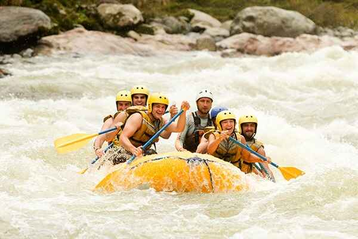

At Rafael Rafting Site, we’re dedicated to delivering exhilarating and safe white-water rafting adventures for thrill-seekers of all skill levels. Our mission is to craft unforgettable memories while cultivating a profound appreciation for the beauty and power of nature. Join us for an adrenaline-fueled journey that connects you with the great outdoors in an unforgettable way!.
 


 

 
